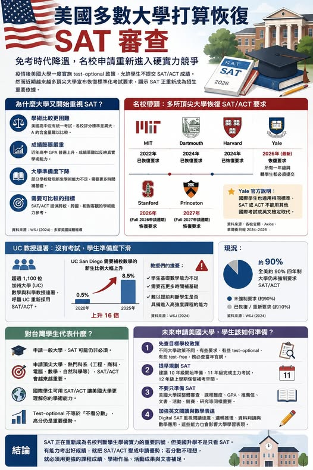

《看懂制度，選對世界》第一集
美國大學正在恢復 SAT 審查
SAT 審查】 免考時代降溫，名校申請重新回到硬實力競爭 疫情後，美國許多大學一度採取 test-optional，也就是學生可以選擇不提交 SAT／ACT 成績。

SAT 審查】 免考時代降溫，名校申請重新回到硬實力競爭 疫情後，美國許多大學一度採取 test-optional，也就是學生可以選擇不提交 SAT／ACT 成績。當時的原因很單純：疫情影響考場開放，學生參加考試的機會不公平；同時，美國社會也長期質疑標準化考試對高收入家庭較有利。但到了近年，風向開始改變。越來越多頂尖大學重新恢復 SAT／ACT 要求，包括 MIT、Dartmouth、Harvard、Yale、Stanford 等校。
這代表美國大學申請並沒有完全回到「只看考試」的時代，但「完全不看考試」的想法，已經明顯降溫。. 【為什麼 SAT 又被請回招生桌上？】 最主要的原因，是大學發現：沒有標準化成績後，招生判斷變得更困難。美國高中沒有全國統一考試，各校評分標準差異很大。同樣是 A，不同高中可能代表完全不同的學術難度。這點特別是在中國有分校的私立高中分數灌水特別嚴重。再加上近年成績膨脹嚴重，許多學生的 GPA 都很漂亮，推薦信也寫得很好，活動履歷也經過包裝。這時候，SAT／ACT 反而成為一個相對可比較的學術參考。
. 【名校帶頭，政策正在轉向】 MIT 早已恢復 SAT／ACT 要求。Dartmouth、Harvard 也陸續跟進。Yale 也宣布，申請一年級與轉學生都需要提交 SAT 或 ACT 成績，國際學生同樣適用，英文檢定不能取代標準化考試。Stanford 也將自 Fall 2026 申請週期起恢復 SAT 或 ACT 要求。這些學校的政策具有指標意義。即使全美仍有不少大學維持 test-optional，頂尖大學的轉向，會影響學生與家長的準備策略。
. 加州大學 UC 系統目前仍屬於 test-free，也就是不採用 SAT／ACT 作為招生依據。但近期有超過 1,100 位 UC 重新採用 SAT／ACT。原因是部分新生進入大學後，數學與 STEM 基礎不足，教授需要花更多時間補基礎能力。這個爭議說明了一件事：SAT 的討論已不只是公平問題，也牽涉到 . 對台灣學生來說，這個趨勢非常重要。過去幾年，很多家庭聽到「美國大學可以不交 SAT」，就以為申請美國名校可以完全不準備 SAT。
甚至還有坊間宣稱保送美國百大? 對國際學生來說，SAT 有一個特殊功能：它能幫助美國大學理解不同教育體系下學生的學術能力。台灣高中、國際學校、OSSD、AP、IB、A-Level，各自評分方式不同。當大學面對全球申請者時，SAT／ACT 可以成為跨國、跨校制的比較工具。. 【Test-optional 不等於不看分數】 很多人誤解 test-optional。它的意思是：學校允許你不提交 SAT／ACT。但這不代表：高分沒有幫助。如果你的 SAT／ACT 成績高於該校錄取學生平均水準，提交分數通常仍能加強申請。
. 【給學生與家長的建議】 未來想申請美國大學，第一步是先確認目標學校政策。不同大學可能是 required、test-optional 或 test-free，不能只聽網路或劣質仲介說法。若目標是名校，建議提早規劃 SAT。最好在 10 年級開始熟悉題型，11 年級完成主力考試，12 年級上學期保留補考空間。但也要記得，SAT 不是全部。美國大學仍採整體審查，課程難度、成績、英文寫作、研究專案、競賽、社區服務與個人特色，仍然非常重要。. 未來幾年的美國大學申請，會越來越重視綜合實力。
SAT 不是全部，但它正在重新成為名校判斷學生學術能力的重要訊號。